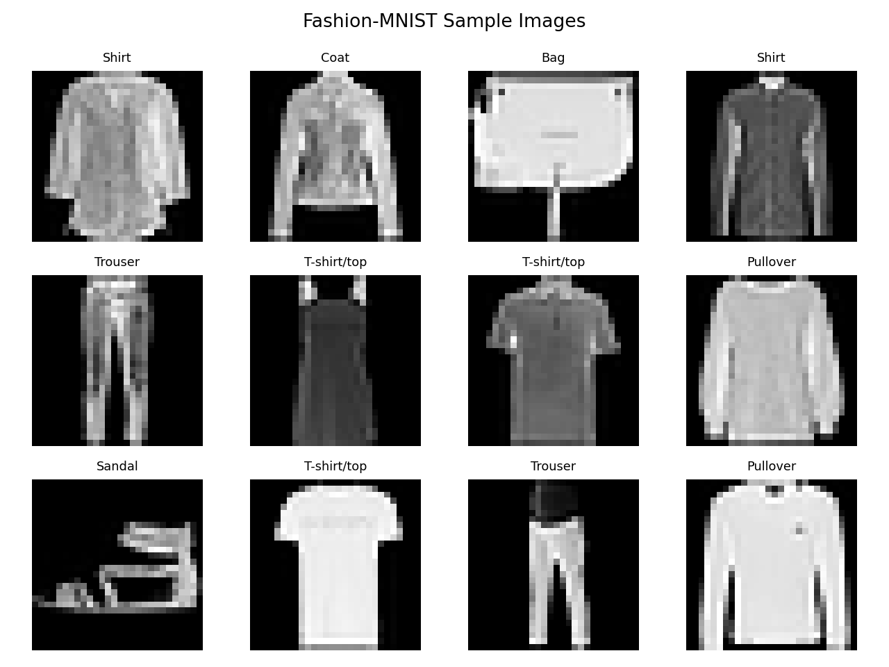

Dataset
A 1,000-row Fashion-MNIST sample with 784 pixel columns and one class label.
Python evidence
A compact, reproducible analysis showing how data checks, leakage prevention, scaling, baselines, and model evaluation support trustworthy machine-learning work.
A neural-network result is not meaningful unless the data is understood and the evaluation is protected from leakage. This evidence artifact uses Python to inspect a Fashion-MNIST CSV, confirm its structure, check common quality problems, normalize the pixel values, split the data before model training, and compare the ANN with a simple baseline.
A 1,000-row Fashion-MNIST sample with 784 pixel columns and one class label.
Predict one of 10 clothing categories from grayscale pixel values.
Create transparent, repeatable evidence rather than showing an unsupported model score.

evidence/outputs/metrics.json evidence/outputs/data_quality_summary.csv evidence/outputs/class_distribution.png evidence/outputs/confusion_matrix.png evidence/outputs/sample_images.png
I selected this code evidence because it shows the practical work behind a model result. The main issue was not simply training an ANN; it was building a defensible process. Python allowed me to verify the label and pixel structure, identify missing or duplicated records, review class balance, normalize the inputs, and preserve a separate test set. This makes the analysis easier to reproduce and explain.
The model reached 81.5% test accuracy and 81.7% macro F1 on the included sample, which was much stronger than the majority-class baseline. However, the limited sample size and confusion between visually similar classes show why leaders should not treat one metric as proof of readiness. My next improvement would be to use the complete Kaggle dataset, compare an ANN with a CNN, examine class-specific errors, and document whether near-duplicate images affect evaluation.
Introduction: This reproducible audit demonstrates the complete evidence behind a Fashion-MNIST ANN result.
Build a transparent classification pipeline that checks data quality and evaluates a neural network against a baseline.
Checked schema, missingness, duplicates, and balance; normalized pixels; performed a stratified split; trained the model; and saved metrics and charts.
Python, pandas, scikit-learn, Matplotlib, NumPy, CSV, JSON, HTML, and CSS.
Provides dataset, executable source, saved outputs, baseline comparison, and limitations rather than an unsupported score.
Demonstrates repeatable data preparation, leakage prevention, evaluation, and technical communication.
Data and ML hiring managers, instructors, analysts, and technical peers.